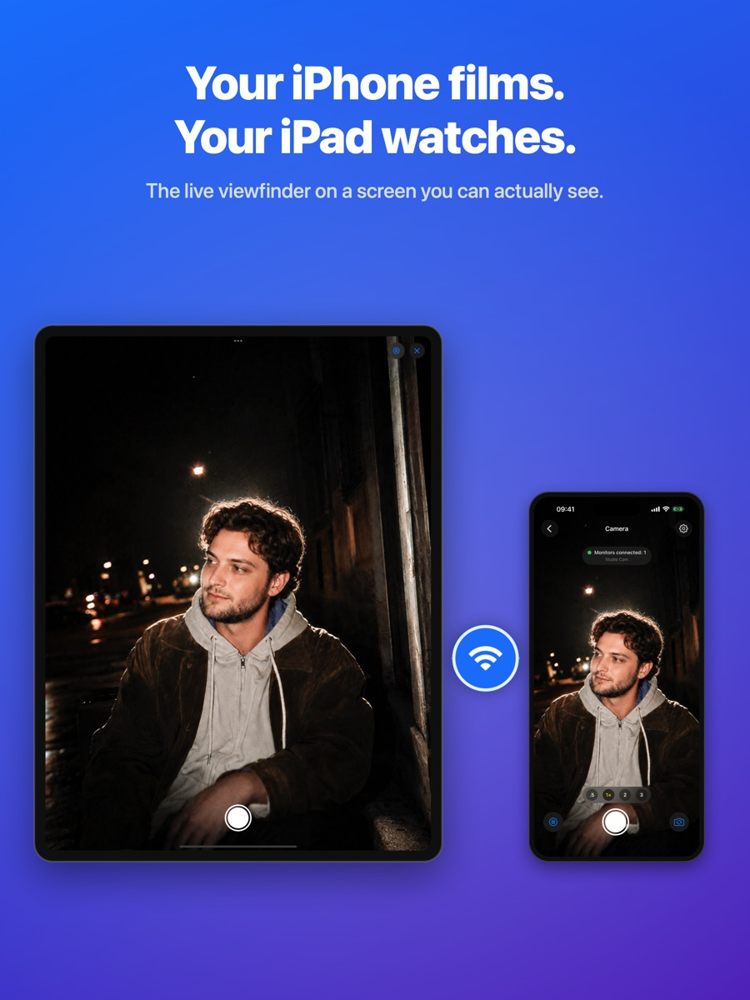
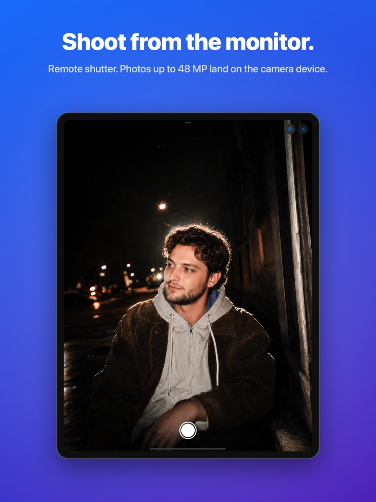
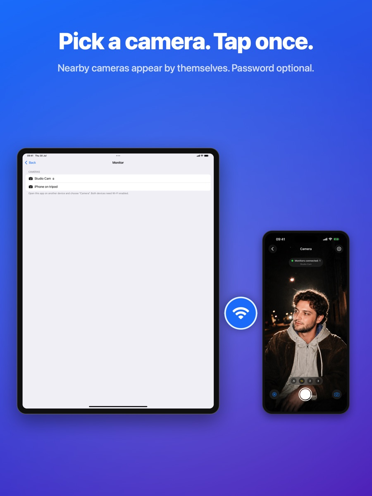

Camera Monitor turns an iPad or a second iPhone into a big live viewfinder for your iPhone camera — over your local network, with no internet and no accounts.



Hardware HEVC video over your local network. No servers, no sign-in, nothing to configure.
Take the photo from the monitor. It is saved on the camera device in full quality.
Lens buttons, tap to focus, exposure adjustment, AE/AF lock, up to 48 MP or Apple ProRAW.
Rule-of-thirds grid on both screens, so the person in the frame can fix the composition.
More than one device can watch the same camera at the same time.
Set an optional password on the camera. It never travels over the network.
Private by design. Video never leaves your local network. No data collection, no analytics, no ads — ever.